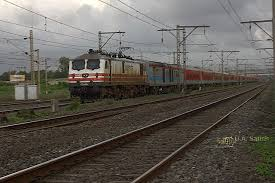
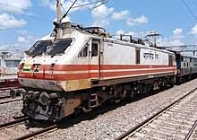
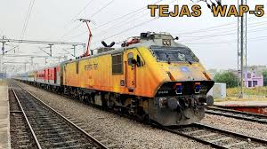
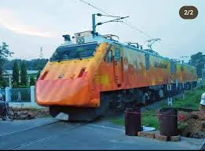

WAP 5 LOCOMOTIVES
WAP 5

Indian locomotive class WAP-5 is a class of electric locomotives used by Indian Railways. The first ten locomotives were imported from ABB in Switzerland in 1995 and later manufactured by Chittaranjan Locomotive Works in India. On 3 July 2014, a WAP-5 set an Indian speed record by hauling a train between Delhi and Agra at a speed of 160 km/h (99 mph).[2] The locomotive has regenerative braking, flexible gear coupling, wheel-mounted disc brakes, and a potential for speed enhancement to 200 km/h (120 mph). Braking systems include 160 kN (36,000 lbf) regenerative brakes, disc brakes, automatic train air brakes and a charged spring parking brake.
Variants

In October 2015, a WAP-5A locomotive (no. 30086) was rolled-out with a gear ratio of 59:35:19 capable of speeds upto 200 km/h (120 mph) for trial runs. In March 2018, a WAP-5 locomotive (no. 30136) with an enhanced power output of 4,500 kilowatts (6,000 hp) was released which was later adopted as a standard based on successful trials. Some locomotives of this class are equipped with "Head On Generation" (HOG) in which electric power from the locomotive's pantograph is transferred to the coaches instead of "End Of Generation" where a power car equipped with diesel generator is provided at either end of the train rake to supply power.[4][5][6] The first WAP-5 locomotive (no. 30140) with HOG was rolled by CLW in June 2018.


In October 2020, two WAP-5 locomotives (no. 35012 and 35013) were given an asymmetric body design with an aerodynamic profile for one cab and a blunt profile for another cab at the opposite end, which is intended to be semi-permanently coupled with a train in a push-pull configuration for Tejas Express services. The two locomotives have a power output of 6,000 horsepower (4,500 kW) and will have a maximum speed of 160 kilometres per hour (99 mph).[7] Two modified WAP-5 locomotives (35027 and 35028) are used to haul the Amrit Bharat Express in a similar push-pull configuration.